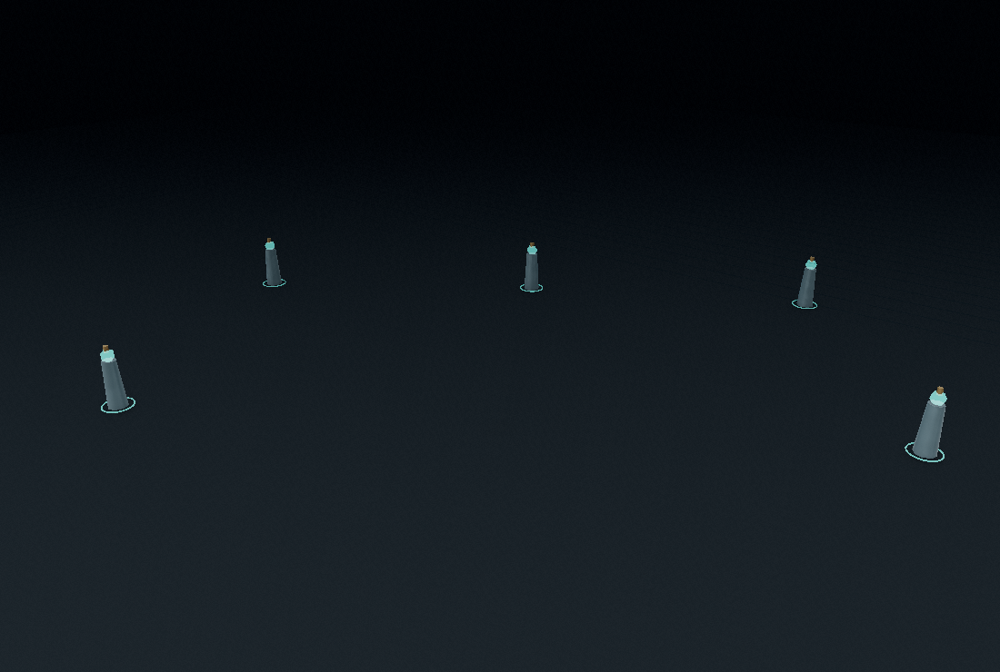
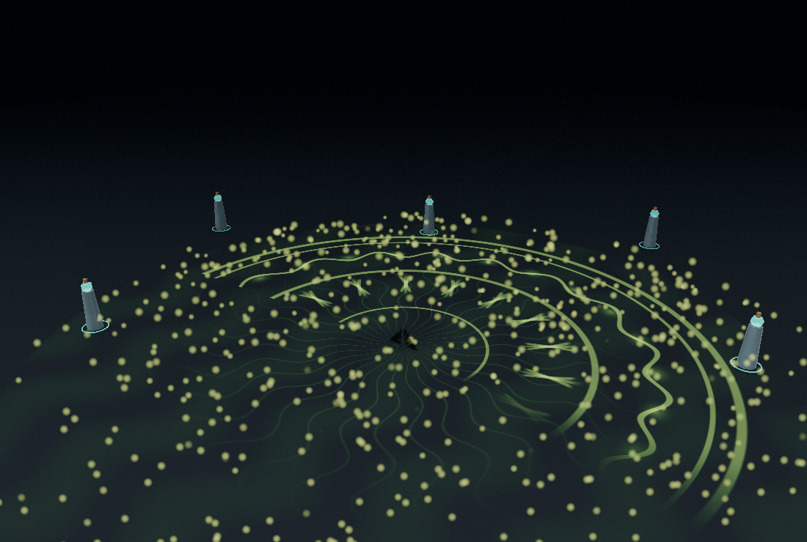
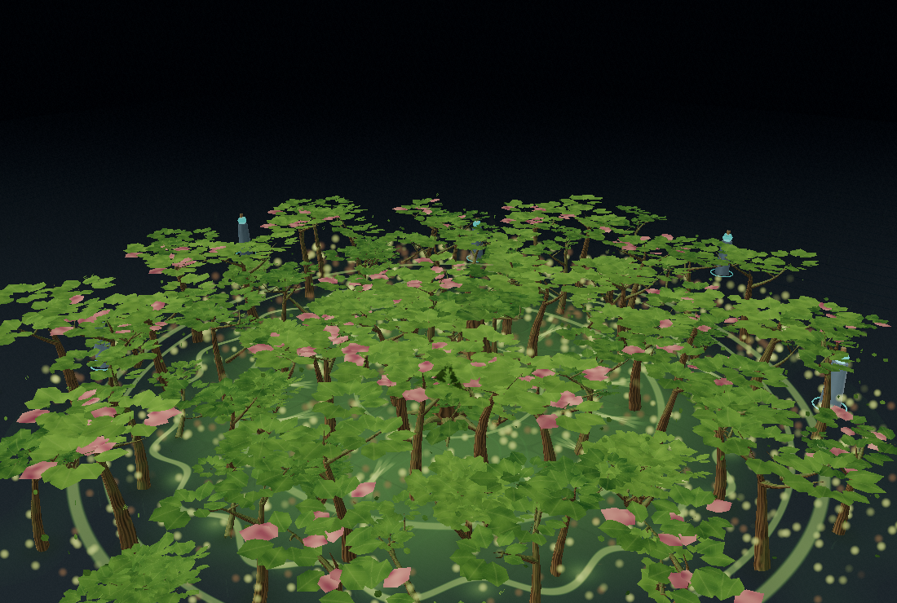
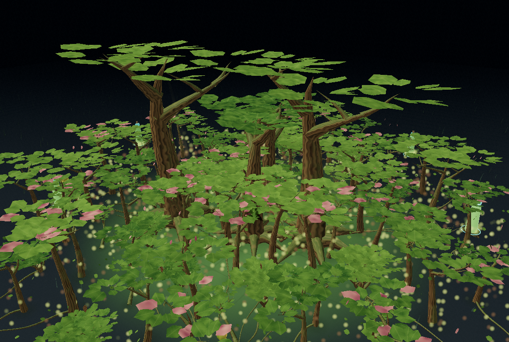
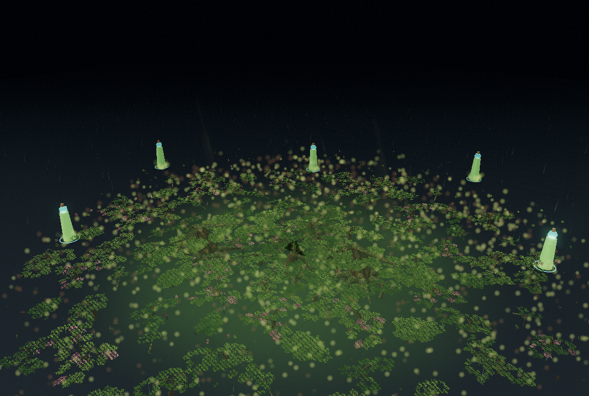
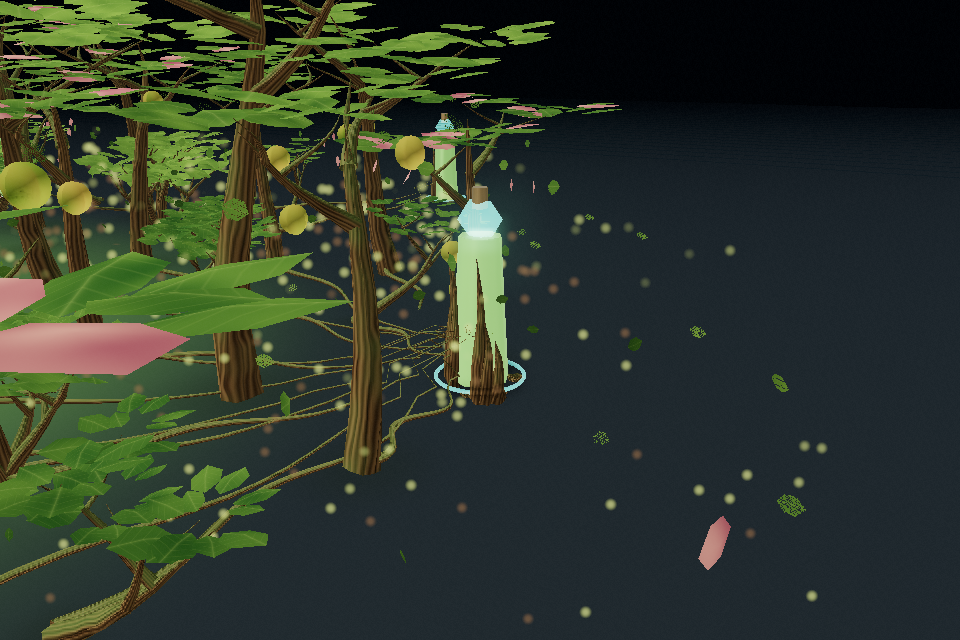
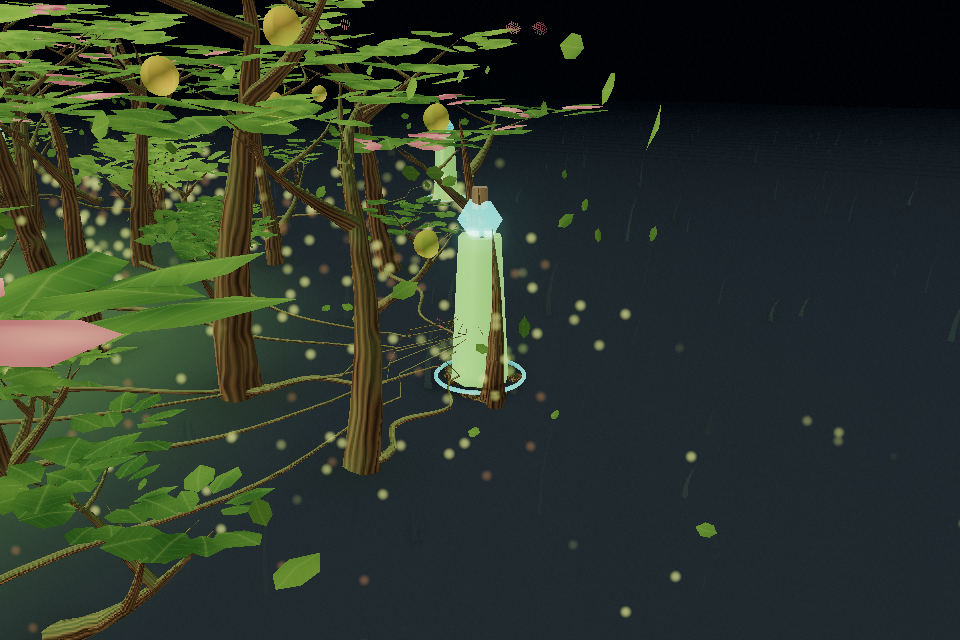
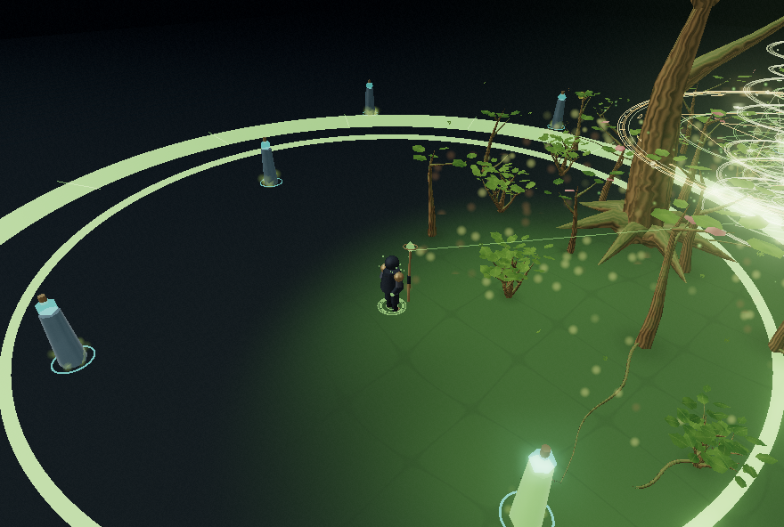
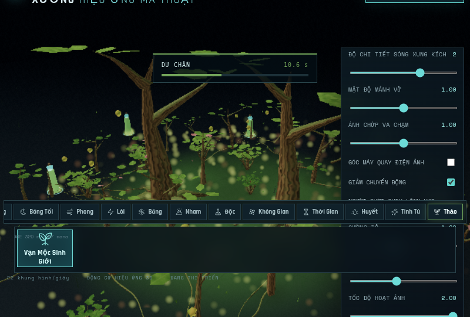

15 elements / 21 skills. This evidence belongs to the forest checkpoint before the later graphics/rune sequencing request. No native GPU FPS claim. Current test results are linked below; older results were not relabelled.




171 canvas frames sampled from Chromium, encoded at 8fps, 21.375 seconds. Prescribed playback rate; not a real-time recording/FPS benchmark. No audio track. Rune Tower disabled for VFX detail; compatibility tested separately.




Fixed-time canvas pixels match exactly at all four presets. Ten repeated casts at Low return to 24 geometries and 14 textures every time.

After cleanup fix: 3 real context recovery cycles, zero errors/warnings. Historical full-registry capture contains three pre-fix context warnings, preserved for traceability.
PBR-like custom shader, contact shadows, translucency, sap scattering and light shafts are approximations. No new enemy AI/HP, native Windows execution or artistic audio sign-off is claimed.